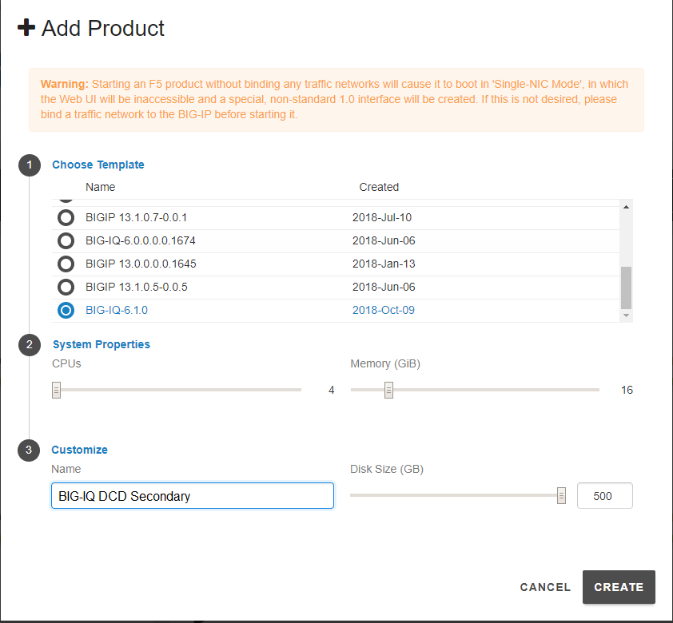
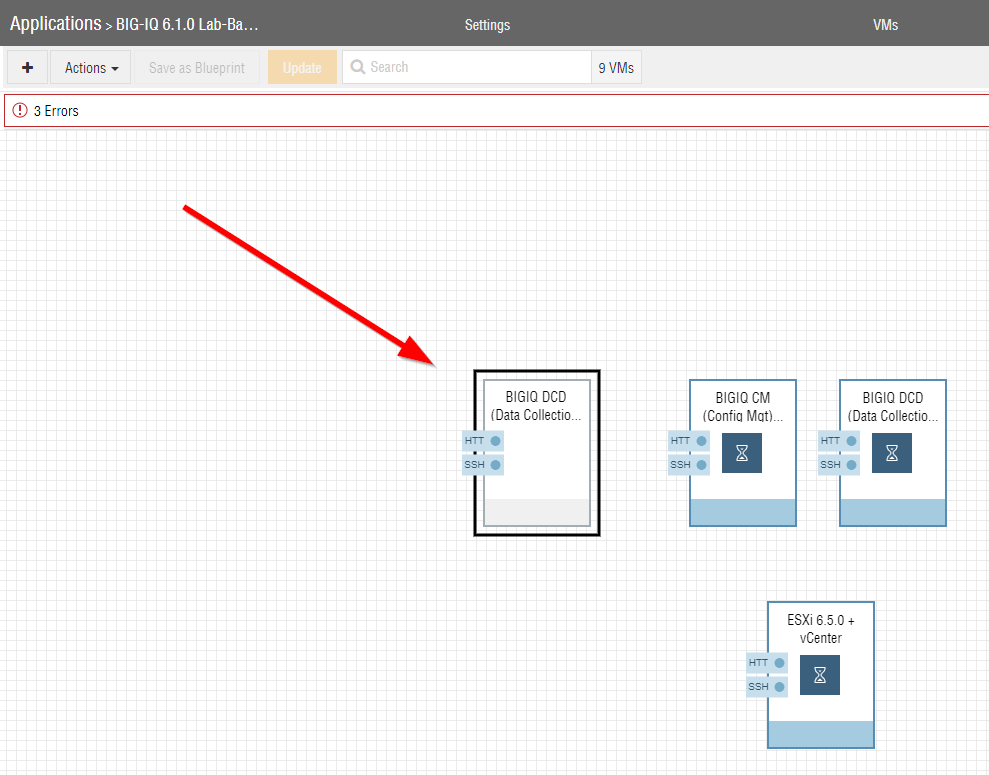
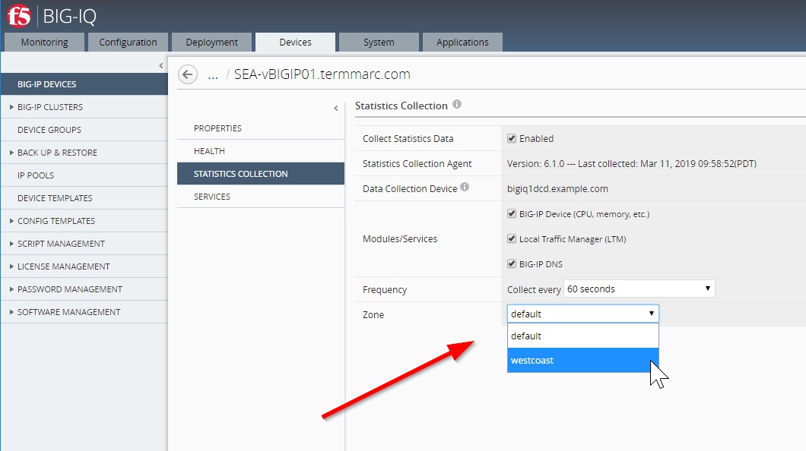

F5 BIG-IQ & Cloud Edition Lab > Class 4: BIG-IQ Platform > Module 6: BIG-IQ Zone Management Source | Edit on
Lab 6.1: Configure a new DCD and setup 2 different zones¶
Using the UDF/Ravello network below, the goal is to configure the BIG-IQ management console and DCD1 in the default zone.
The DCD2 at the other location will be in zone westcoast. The BIG-IPs will be assign to the approriate zone depending on their location.
{kind=link}
Let’s first add a BIG-IQ DCD image in the blueprint.
In UDF:
In the F5 Products column, click on ADD

Select approriate release of BIG-IQ (same as the existing active BIG-IQ part of the blueprint) and set the following values for CPU/Memory/Disk:
vCPUs: 4
Memory: 16 GiB
Disk Size: 500 GiB
Click on CREATE.
{kind=link}
After few minutes, the VM is created in UDF. Click on the new VM, go to the Subnets tab and bind additional interfaces (External and Internal).

Finally, start the new BIG-IQ.

In Ravello:
In the top left, click on the + sign and search for BIG-IQ 6.1 CM VM image.

Add the image into the deployment.
{kind=link}
Got to the network tab and fix the IP addresses using 10.1.1.13, 10.1.10.13 and 10.1.20.13. Click on Update
{kind=link}
Then, start the new BIG-IQ DCD VM.
Connect via
SSHto the system Ubuntu Lamp Server.Request 1 BIG-IQ Evaluation license and set it in the inventory file in
bigiq_onboard_license_keyvariable (Ravello only).# cd /home/f5/f5-ansible-bigiq-onboarding # vi inventory/group_vars/udf-bigiq-dcd-02.yml
Note
Double check the IP address of the new secondary BIG-IQ and update it in udf-bigiq-dcd-02.yml if necessary (bigiq_onboard_server)
Once the new VE is full up and running, execute the following script to onboard this new secondary BIG-IQ CM.
# cd /home/f5/f5-ansible-bigiq-onboarding # ./cmd_bigiq_onboard_secondary_dcd.sh nopause
Verify the new secondary BIG-IQ DCD has been correctly added to the BIG-IQ Data Colletion Devices list.
{kind=link}
Currently, there is only 1 zone defined called
default. We will create a new zone calledwestcoast, keeping thedefaultzone for the East coast.
Note
In order to avoid error messages complaining about the lack of a default zone, you must have one DCD at minimum have the default zone.
Let’s define the new zone
westcoaston the new BIG-IQ DCD 02 added earlier. Login on the BIG-IQ CM server, go to the System tab, under BIG-IQ DATA COLLECTION > BIG-IQ Data Collection Devices, select the new BIG-IQ DCD 02. In Properties, and click Edit, select the Zone box, click Create New.Enter the name
westcoastas the name of the new Zone.
{kind=link}
It might takes few minutes for the new zone to be set.

Change the Zone of the
SEA-vBIGIP01.termmarc.comandSJC-vBIGIP01.termmarc.comBIG-IP towestcoast.
Select the BIG-IP device from the Devices menu, and select STATISTICS COLLECTION.
Once selected, select westcoast from the Zone drop down menu.
It might takes few minutes for the new zone to be set.
{kind=link}
Check on the Device tab the statistic collection is happening as expected.